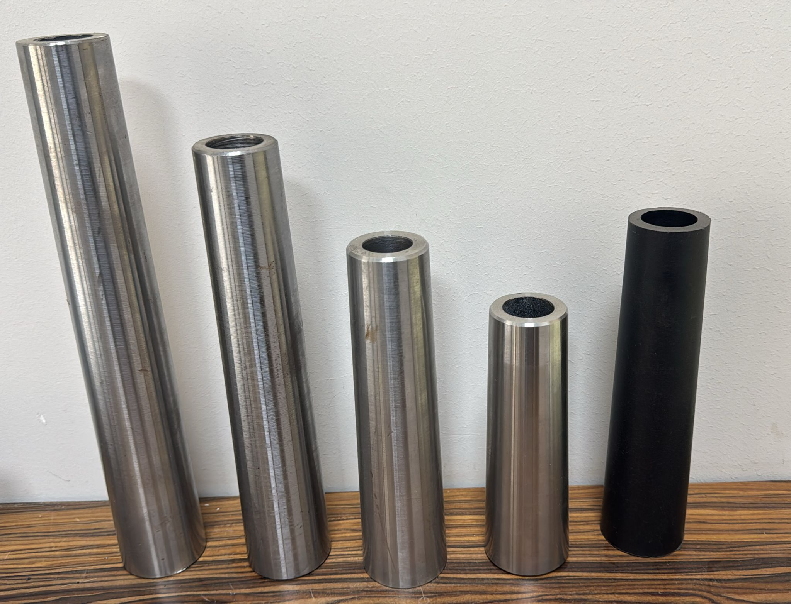
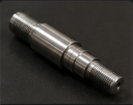
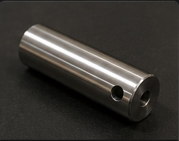

CNC TORNA & YEDEK PARÇA İMALATI
Kaliteli üretim.Zamanında teslimat.
CeBa Makine Olarak Hassas, Güvenilir Ve Zamanında Teslimat Prensipleri İle Çalışıyoruz
◎
Hassas İşleme
Teknik resme uygun, hassas ölçülerde üretim.
⚙
CNC Torna
Çeşitli metal parçalar için profesyonel imalat.
✓
Kalite & Güven
İşin gerektirdiği kalite standartlarına odaklı üretim.
↗
Zamanında Teslimat
Siparişlerinizi planlı şekilde teslim etmeye çalışıyoruz.
HAKKIMIZDA
CeBa Makine
CNC torna ve parça imalatı alanında müşterilerimize kaliteli, hassas ve ekonomik çözümler sunuyoruz.
Teknik resim ve müşteri taleplerine uygun olarak farklı ölçü ve özelliklerde torna parçaları üretiyoruz.
Kalite Üretim · Zamanında Teslimat

Modern üretim anlayışı · Hassas parça imalatı
HİZMETLERİMİZ
Üretim Çözümlerimiz
CNC Torna İmalatı
Teknik resme veya numuneye göre hassas torna parçaları.
Özel Parça Üretimi
İhtiyaca özel ölçü ve toleranslarda parça üretimi.
Seri Üretim
Tekrarlı parçalarda düzenli ve planlı üretim desteği.
ÜRÜNLER / REFERANSLAR
Üretimden Örneklerimiz



